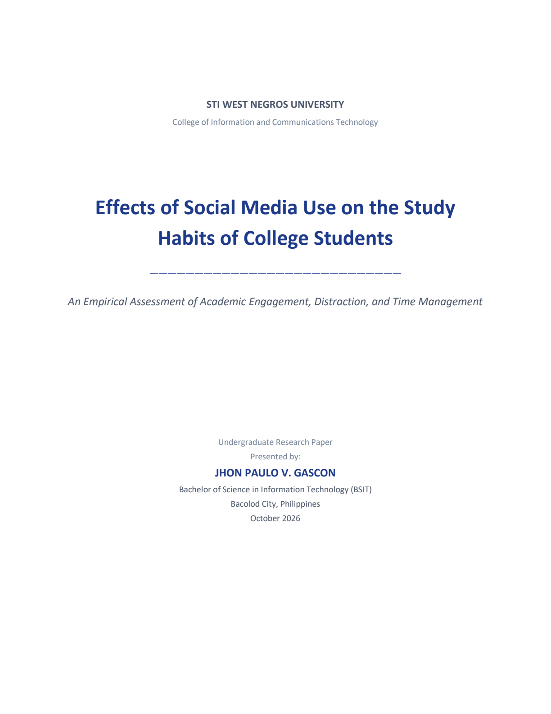

Word (.docx) 4 Pages • APA 7th
Academic Research
Effects of Social Media Use on Study Habits of College Students
Empirical quantitative study investigating screen time and scholastic focus, featuring methodology, comparative tables, and full APA 7th reference registers.